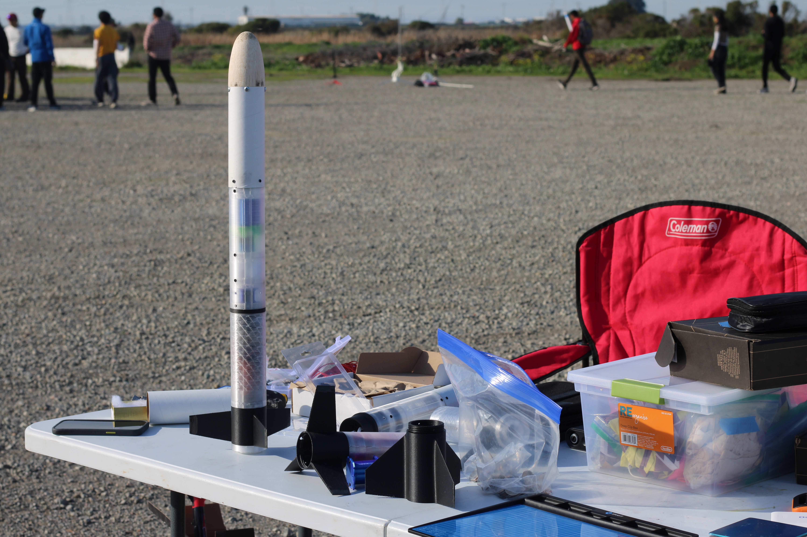
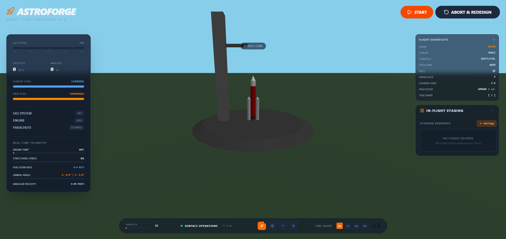
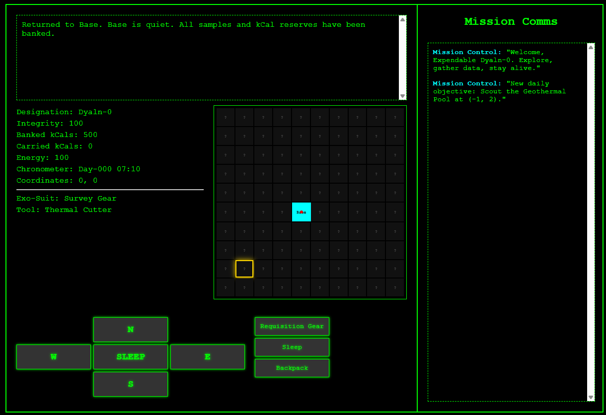
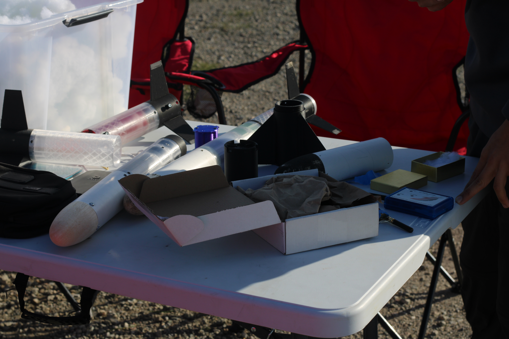

01 / Signal
Profile
A structured introduction that reads like a dossier, not a casual intro.
A structured record of aerospace systems, software, leadership, and fieldwork. The interface is staged like a mission console so the story unfolds in a deliberate sequence instead of a casual scroll.
Status
Active
Primary Signal
Live
Modular hardware, launch preparation, and iterative build cycles.
Project File
Archive
Software File
Code
Mission Log
The page is staged as a sequence: who I am, what I build, who I work with, and where the evidence lives.
01 / Signal
A structured introduction that reads like a dossier, not a casual intro.
02 / Build
Personal engineering and software work presented as a clean archive.
03 / Crew
Organizations and leadership roles separated into their own record set.
04 / Proof
Built to be professional enough for admissions, internships, and resume use.
Systems Archive
Engineering File 01
A configurable launch platform designed for adaptability, testing, and controlled iteration.
Read file →Software File 02
A narrative game with branching choices and systems-based play structure.
Read file →Simulation File 03
An AI-assisted rocket simulation game built around design-test-refine loops.
Read file →Crew Records

Crew Record 01
Competitive rocketry leadership centered on design, fabrication, testing, and national-level performance.
View record →
Crew Record 02
Student satellite systems work focused on mission readiness, documentation, and launch preparation.
View record →Field Archive

Industrial Pyramid
San Francisco

Yosemite Valley
Field photo

Joshua Tree Desert
Field photo
Access
The viewer moves through a deliberate sequence: profile, projects, teams, imagery, then contact. It should feel like reading a field database entry from a remote surface.